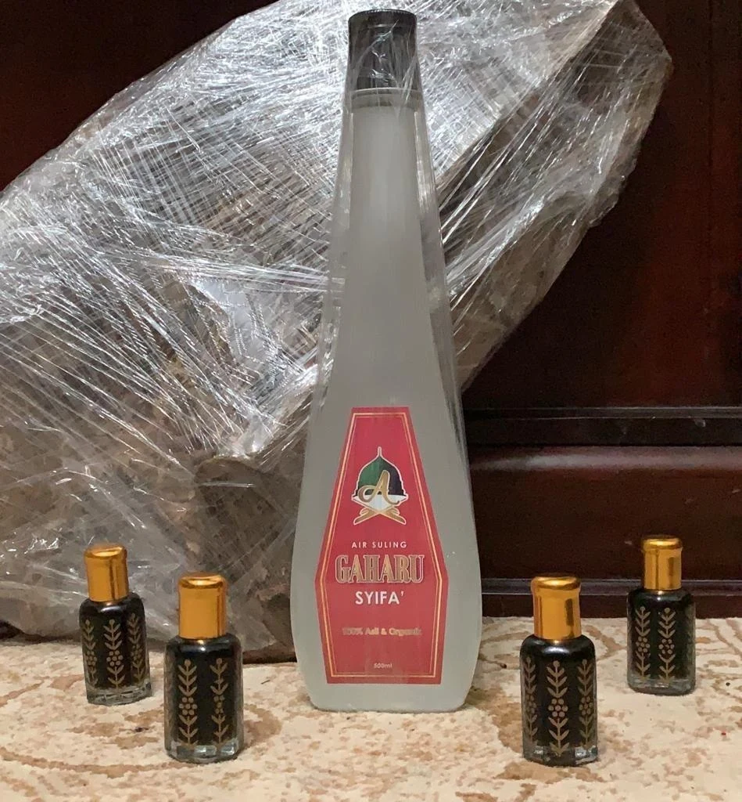
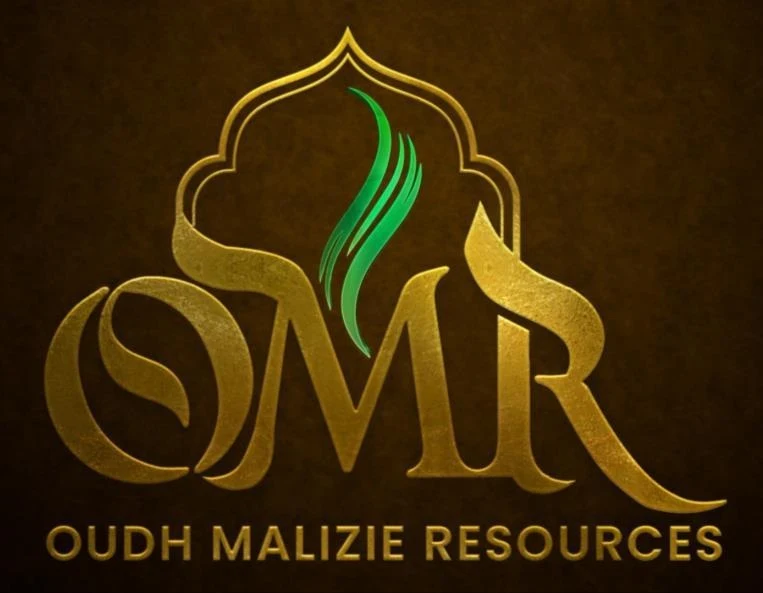
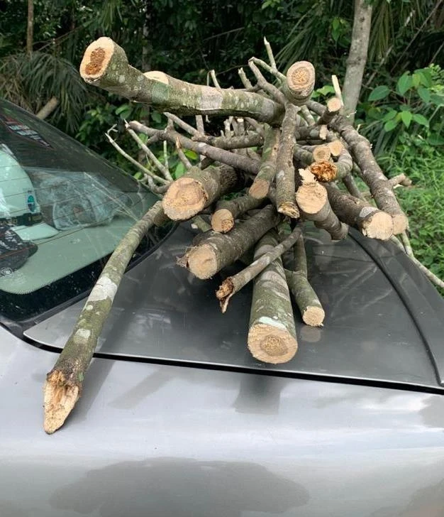
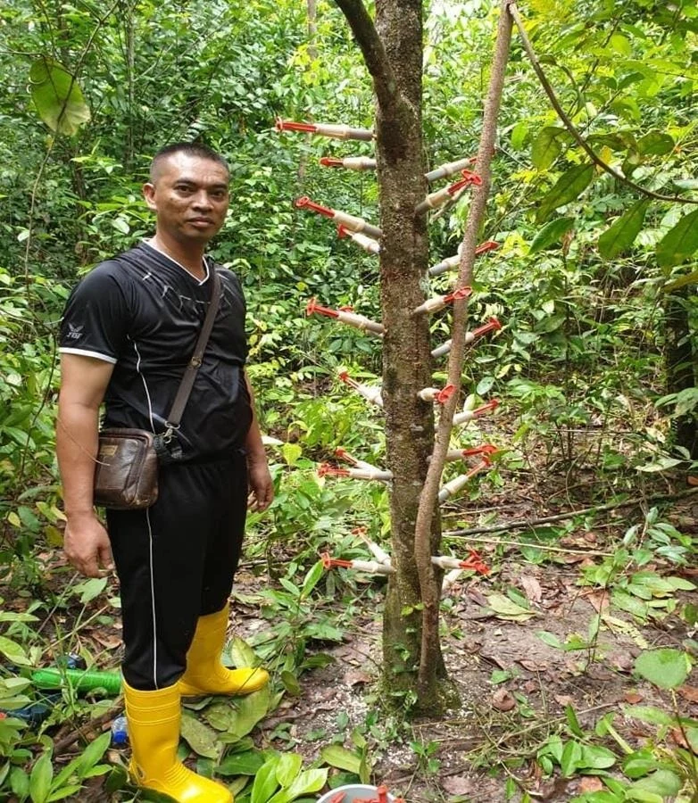
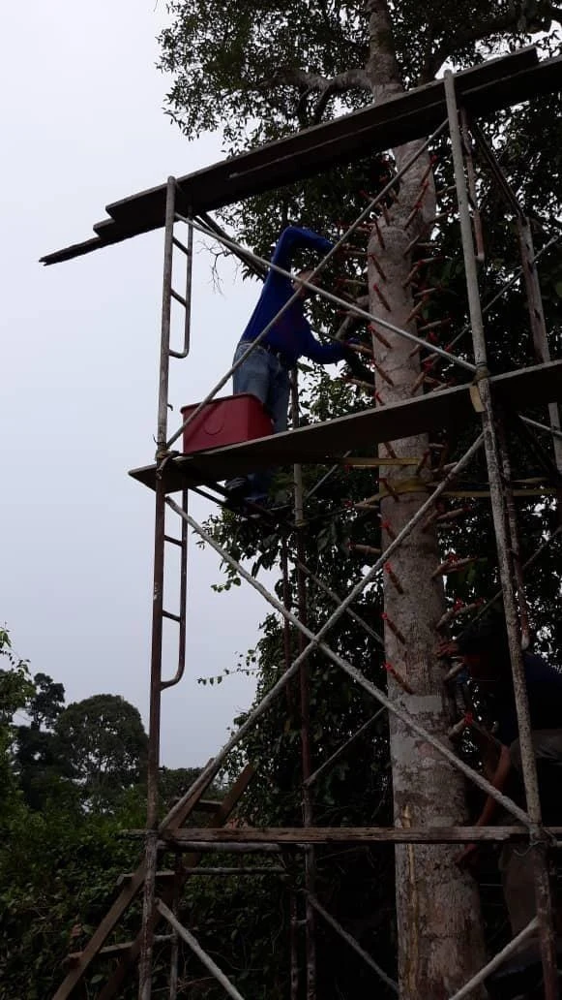
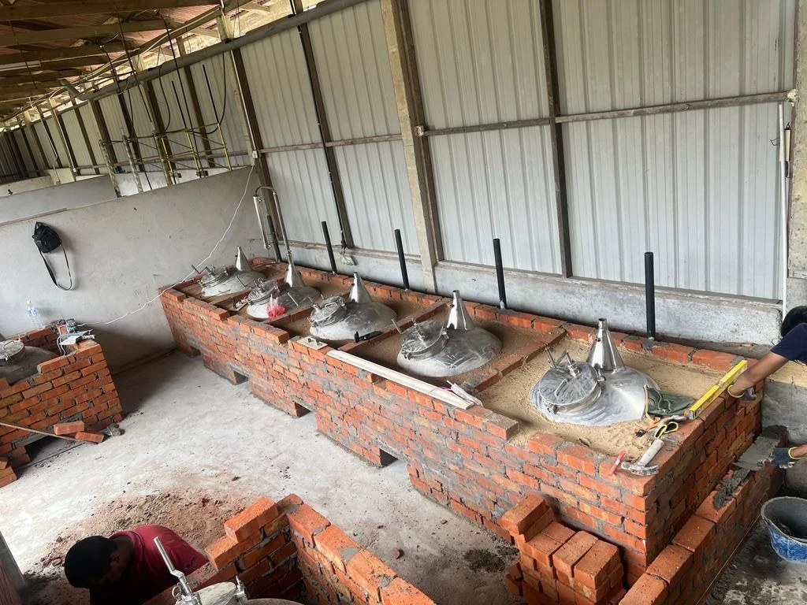

01 / MINYAK OUD
Inti wangian gaharu
Minyak oud daripada proses penyulingan gaharu.

OUDH MALIZIERESOURCES · MALAYSIABERAKAR DI ALAM. BERJIWA WARISAN.
Dari alam, menjadi wangian.
Menyusuri perjalanan gaharu Malaysia — dari pohon yang dijaga hingga titisan oud yang bernilai.
Terokai produk kami
Gaharu. Warisan alam yang diteruskan.CERITA OUDH MALIZIE
Di sebalik setiap wangian, ada asal usulnya. Oudh Malizie Resources menghubungkan perladangan, inokulasi dan pemprosesan gaharu dengan penghasilan minyak oud serta produk berasaskan gaharu.
Daripada kerja di ladang hingga kemasan hadiah, pengalaman kami merangkumi pelbagai peringkat dalam rantaian gaharu.
Lihat bagaimana ia bermulaPILIHAN DARIPADA GAHARU
DARI SUMBER KE PRODUK AKHIR
Rantaian gaharu yang saling berhubung.
Bermula di ladang, diteruskan melalui kepakaran.

Penanaman dan penjagaan pokok gaharu sebagai asas sumber.

Proses inokulasi untuk merangsang pembentukan resin gaharu.

Pemprosesan bahan gaharu bagi penghasilan minyak oud.
KEPAKARAN & PERKHIDMATAN
Untuk pemilik ladang, pengusaha dan rakan perniagaan yang ingin mengenali kemampuan Oudh Malizie.
Bincang keperluan andaBekalan anak benih, baja dan keperluan berkaitan pembangunan ladang gaharu. Hubungi kami untuk membincangkan skop serta ketersediaan bekalan.
Perkhidmatan dan teknologi inokulasi pokok gaharu. Keperluan pelaksanaan dibincangkan mengikut keadaan pokok serta lokasi ladang.
Pemprosesan minyak oud serta bekalan mesin dan peralatan pengekstrakan. Bincangkan keperluan operasi anda dengan pasukan kami.
Bekalan minyak oud, kayu gaharu, wangian dan cenderahati. Maklumat produk dan ketersediaan boleh disemak terus melalui WhatsApp.
DOKUMENTASI OUDH MALIZIE
Kenali dokumen di sebalik perjalanan kami.
Tekan gambar untuk melihat salinan yang lebih besar.
PENDAFTARAN PERNIAGAAN
Suruhanjaya Syarikat Malaysia
PENDAFTARAN INDUSTRI
Lembaga Perindustrian Kayu Malaysia
HAK CIPTA
Perbadanan Harta Intelek Malaysia
PENGESAHAN USAHAWAN
Kraftangan Malaysia
PENDAFTARAN PEMBEKAL
Kementerian Kewangan Malaysia
PENGHARGAAN PENCERAMAH
Lembaga Perindustrian Kayu Malaysia
REKOD TERDAHULU
Dokumen berikut merakamkan pendaftaran dan permit terdahulu, tanpa menyatakan status kelulusan semasa.
REKOD PERMIT 2023
Majlis Perbandaran Kajang
REKOD PENDAFTARAN
Jabatan Perhutanan Negeri Johor
REKOD PENDAFTARAN 2023
Jabatan Perhutanan Negeri Selangor
Salinan daripada profil syarikat. Tarikh dan tempoh sah adalah seperti yang tertera pada setiap dokumen. Nombor kad pengenalan serta butiran bayaran tertentu disembunyikan pada salinan paparan.
LENSA OUDH MALIZIE
Dari ladang hingga pertemuan industri.
50 foto sebenar daripada perjalanan Oudh Malizie.
Memaparkan 50 daripada 50 gambar
MULAKAN PERBUALAN
Produk, perkhidmatan atau peluang kerjasama.
Kami sedia mendengar keperluan anda.